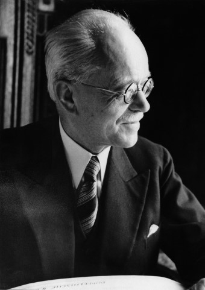
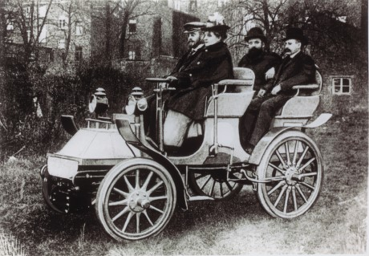

아우구스트 호르히는 1868년 독일 뷔닝겐(Winningen)에서 대장장이의 아들로 태어났다. 미트바이다 공대(Hochschule Mittweida)에서 엔지니어링을 전공한 후 1896년 카를 벤츠(Karl Benz)의 회사(메르세데스와 합병 이전의 벤츠사)에 합류했다. 이후 아우구스트 호르히는 1899년 자신의 이름을 딴 회사인 ‘호르히 앤 시에(A.Horch & Cie)’를 쾰른 근처에 설립했고 1901년에 자신의 첫 자동차 모델을 출시했다. 호르히 앤 시에는 1902년에 작센(Sachsen) 지방의 라이헨바흐(Reichenbach)로 이전하면서 주식회사로 개편됐다. 아우구스트 호르히는 카레이서로도 활동했는데 자신이 만든 자동차를 타고 경주에 출전해 여러 번 우승하기도 했지만 정작 회사의 상황은 어려워졌다. 1909년, 아우구스트 호르히는 투자자들과의 갈등으로 이사회의 결의에 의해 자신의 회사에서 축출되었다. 엔지니어 출신이었던 아우구스트 호르히가 지나치게 자동차 경주에만 몰두하여 사업성에 문제가 있다는 이사회의 판단 때문이었다. 기존 회사를 떠난 아우구스트 호르히는 1909년 같은 도시에 호르히 오토모빌-베르케(Horch Automobil-Werke GmbH)라는 이름으로 두 번째 회사를 설립했다. 하지만, 자신의 이름을 이미 이전 회사에 사용했기 때문에 똑같은 이름을 두 번째 회사에 사용할 수가 없었다. 그래서 자신의 이름인 'Horch'(듣다)의 라틴어 어원인 'Audi'를 회사 이름으로 사용하기로 했고 회사명을 아우디 베르케라고 했다. 아우구스트 호르히는 또한 세계 최고의 자동차 경주로 손꼽히던 오스트리아 국제 알파인 레이스에 1911년 처음으로 참가하여 우승하였으며, 1920년 아우디 본사는 자동차 설계 전문가들이 많은 베를린으로 이전한 후에는 베를린에서 교통 자문관으로 일하면서 아우디의 이사로 활동했다.

